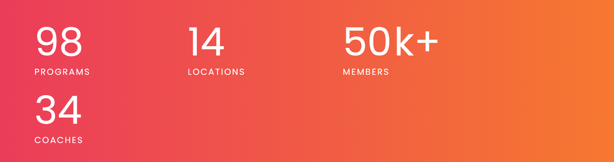

About Us
Muscle & fitness was born from the idea of 5 friends and partners who are passionate about sports: John Kovlaski, Mike Johnson, Rich Fernandez, Josh O'Sullivan, Peter Murphy, who want to give a 180 degree turn to the fitness industry, making exercise accessible and affordable for everyone in Ireland, this is how together through a capital fundraiser, they create their first center in Dublin, to later open 2 more gyms in Dublin, and then make the jump to Cork, May, and also Galway This is how the largest fitness chain in Ireland was born.
We are also happy to announce that next year we will open 20 new locations, in order to continue inspiring more and more people to lead a better and more athletic life.
Grow muscle, be fitness!
Muscle&Fitness